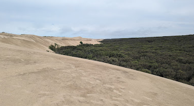
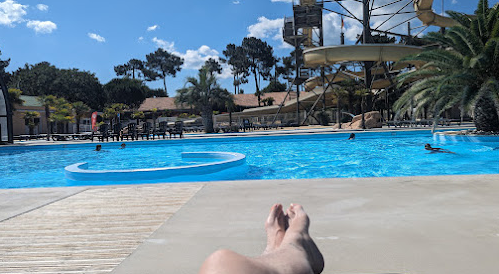
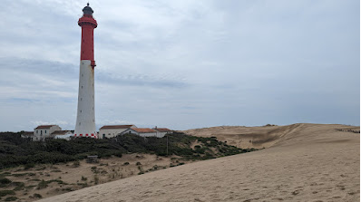

Suzuki GSX-S1000GX+ Review
Suzuki GSX-S1000GX+
So far I can't fault this bike, well apart from the overly close ratio sporty gearbox, but I think that is more to do with my riding style than the bike itself.
This bike is incredibly comfortable, making it ideal for long-distance rides—like the one to Royan in France (more on that later). However, the clutch and Euro5 fuel mapping leave much to be desired.
I added cruise control from Veridan, quite a good product but needs more functionality unfortunately. The main issue I found is the lack of ability to alter your set speed without cancelling the cruise control and then resetting it, but at least it gives me the opportunity to rest my hand on longer trips.
Quick update on the Veridan CC. They have added step up, step down and resume functionality through a new three button switch. I’ve placed my order for the switch, only £27 delivered, very good value for such an important upgrade. I haven’t received it yet so no review yet.
As of June 24, 2024, I’ve just returned from what has become my bi-annual road trip to France. I spent a delightful 11 nights in a luxury caravan in Les Mathes.
I took the ferry from Portsmouth to Ouistreham arriving in France at 10pm, followed by an hours ride to my Formule 1 Hotel in Saint-Lo for the night and then the following morninga nice leisurely ride south to my luxury caravan at La Pinede, Les Mathes, a 4* caravan park near the city of Royan on the French Atlantic West Coast.

I've stayed here before and found the site really suits my needs, and despite being a little bit out of season everything on-site is open, there is entertainment most evenings and also if I were to fancy it, poolside entertainment.
Despite less-than-ideal weather, I managed to do everything I wanted to do — mostly walking and relaxing by the pool followed by a nice cold pint, 500ml, of Kronenbourg 1664 bier and a quiz in French sat outside the bar. I actually managed to score 12 points in one of them. What more could you want?

I did a couple of 10 mile+ walks through the forest and around Les Mathes town and surrounding footpaths. I finally manned up and walked to the lighthouse, Phare de la Coubre, and then along the beach and back to the caravan via forest fire break 30. That is a 14 miler. Many a time I've seen the lighthouse in the distance and started walking towards it, problem is, it's so tall that it can be seen from miles away and never seems to get closer, but this time I did it.
No wild boars encountered during my treks this time apart from a dead, bloated one legs up in a small watering hole. I did see a small deer of some sort darting back into the cover of the trees but they are not quite so scary.

Looking ahead, in late September, Liam and I are embarking on a tour. We'll catch the Portsmouth to Santander ferry to Northern Spain and then travel north along the West Coast of France to Ouistrehan (Caen). Along the way, we'll stop at just two sites: four nights in the first, followed by three nights in the second.
Update. We are en-route as I write. I have fitted the new 3 button cruise control switch but couldn't update the firmware so it might be a bit unfair to critique it yet, but so far so good.
We are travelling to Santander on one of Brittany Ferries new ships, apparently it's a bit greener than the old ones. It's certainly quieter.
The sea is really smooth today, I wouldn't say millpond smooth but not puke inducingly rough either.